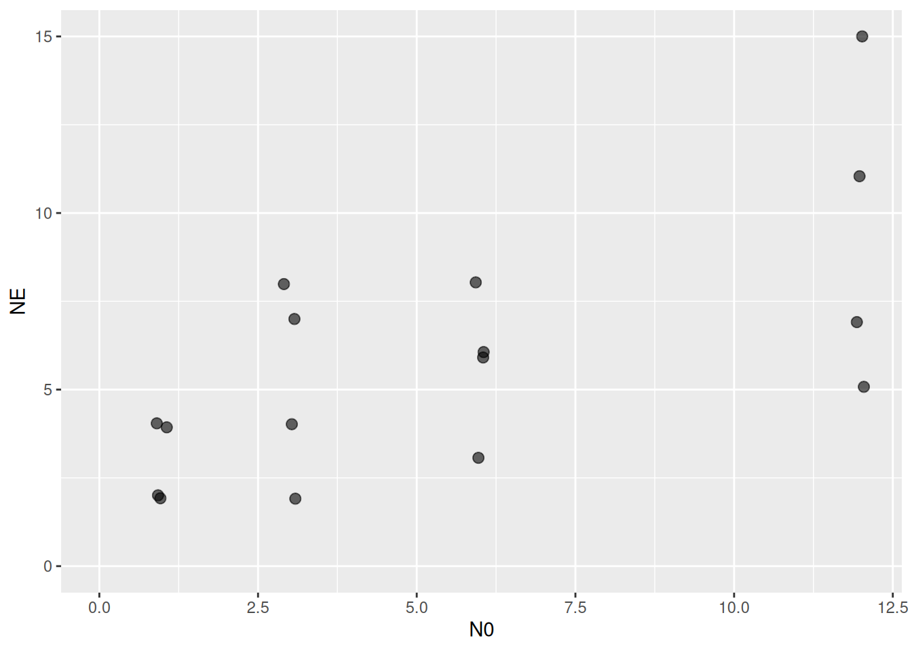
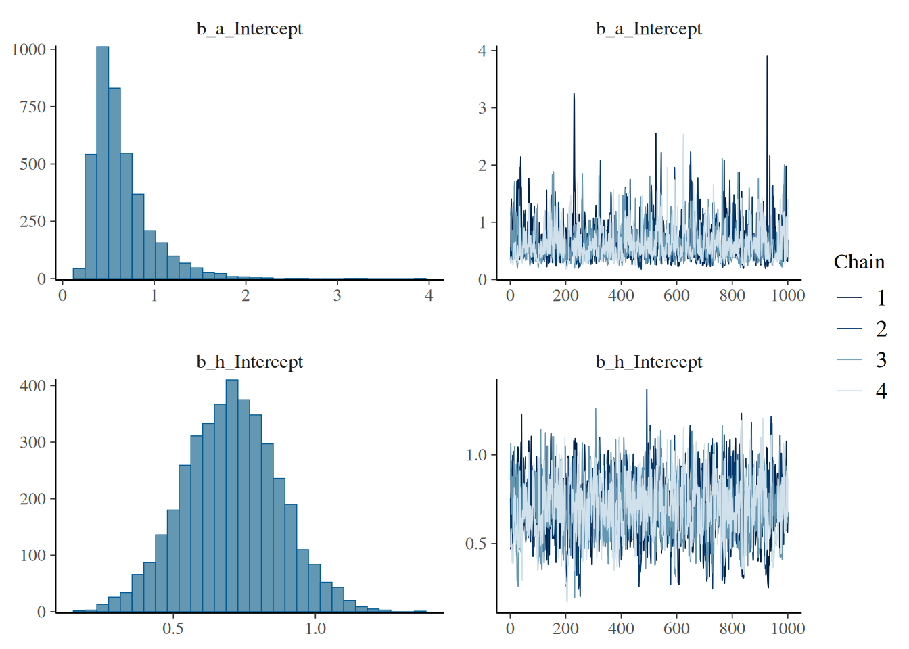
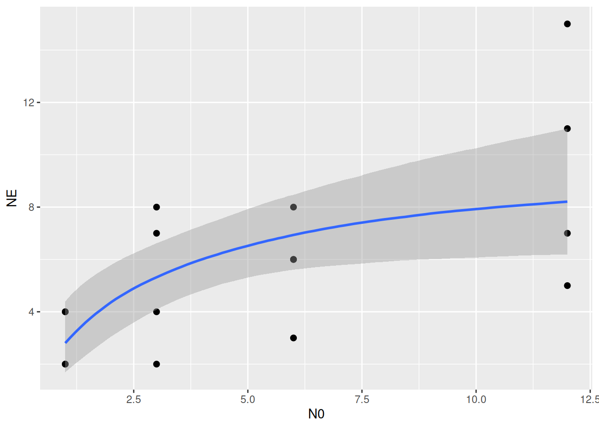
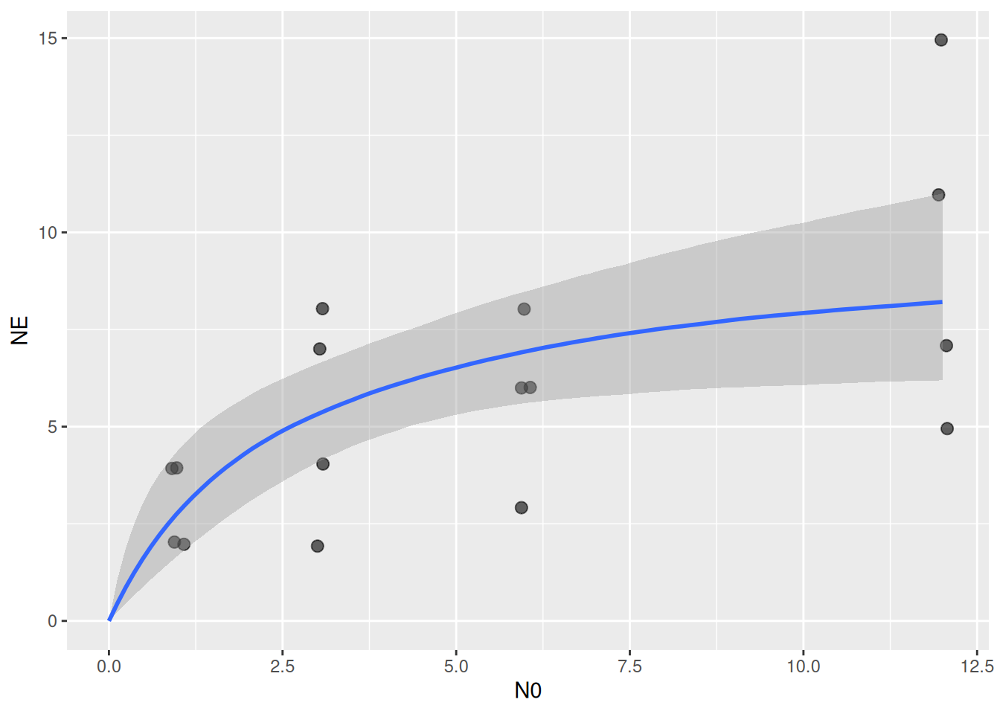

rm(list=ls())
library(BayesFR)1. Minimal example: data with prey replacement
The first dataset is originally from Michalko and Pekar (2017) and was made available in the FoRAGE database (Uiterwaal et al. 2022). It contains experiments with a spider feeding on a pear psylla pest. With feeding trial data, we want to regress number of eaten prey \(N_E\) against offered prey abundance \(N_0\). All experiments were run for 7 hours and prey abundance \(N_0\) was kept constant by replacing eaten prey.
data(df_Michalko_and_Pekar_2017_AM_NAT)
df = subset(df_Michalko_and_Pekar_2017_AM_NAT, ID=="Figure 3c")
head(df) N0 NE Time Predator Prey ID
48 1 2 7 Dictyna spp. Cacopsylla pyri Figure 3c
49 1 2 7 Dictyna spp. Cacopsylla pyri Figure 3c
50 1 4 7 Dictyna spp. Cacopsylla pyri Figure 3c
51 1 4 7 Dictyna spp. Cacopsylla pyri Figure 3c
52 3 2 7 Dictyna spp. Cacopsylla pyri Figure 3c
53 3 4 7 Dictyna spp. Cacopsylla pyri Figure 3cggplot(aes(N0,NE), data=df) +
geom_jitter(width=0.1, height=0.1, alpha=0.6, size=2.5) +
coord_cartesian(xlim=c(0,NA), ylim=c(0,NA))
We want to estimate a type 2 functional response, parameterized by attack rate \(a\) and handling time \(h\). Since there was no prey depletion, we can directly fit the per-capita feeding rate, multiplied by predator abundance \(P\) and experimental duration \(T\) to the observed data.
\[ F(N) = \frac{aN}{1+ahN}PT\] An alternative parameterization \(\frac{f_\max N}{N_\text{half}+N}\) using maximum feeding rate and half-saturation density is presented in the priors tutorial.
Additional to this deterministic prediction model, we need to specify how we assume the observed data to be distributed around the model predictions, this defines the likelihood function. Observed data \(N_E\) are non-negative integers and theoretically do not have an upper boundary (since eaten prey are constantly replaced). Hence we can use the Poisson distribution (or, alternatively, the Negative Binomial for overdispersed data)
\[ N_E \sim \text{Poisson} \left( F\left(N_0\right) \right)\] A nonlinear prediction model for brms is defined in bf() the with model formula as first argument, parameters in the next line, and specifying that it is a nonlinear model with nl=TRUE. Here, a~1, h~1 just means that these parameters are not depending on other predictors, i.e. fitting these parameters as is.
FR.formula = bf( NE ~ a*N0/(1.0+a*h*N0)*Time,
a~1, h~1,
nl = TRUE)Other prediction models cannot be defined in just a single line of code. This package contains Stan code for them, which can be fed into brms. The following formulation is identical to the one above, with a function Type2H_fix() coded in Type2H_fix_code (which is used later in the brms call). A helpfile is available with ?Type2H_fix_code. The function Type2H_fix() requires abundance of offered prey N0, predator abundance P0, experimental duration Time, and parameters a and h as arguments, in that exact order. Here, fixed values are provided for P0=1.0 and Time=7.0, but these can also be columns in the data.
FR.formula = bf( NE ~ Type2H_fix(N0,1.0,7.0,a,h),
a~1, h~1,
nl = TRUE)Note that attack rates and handling time are estimated per capita and per unit of time. Here, by specifying experimental duration as Time=7.0, attack rates are per hour, and handling time is in hours. Alternatively, if parameters should be estimated in days, Time=7.0/24.0 will do. Note that time should be expressed as real values and not as integers, otherwise brms will misinterpret 7/24 as an integer operation.
The parameters’ units are important for the prior definition. Here, we just choose some weakly informative exponential distributions with a mean of 1, each. A prior is required for these non-negative parameters and a lower boundary must be specified with lb=0. More information on priors is provided in the dedicated tutorial.
FR.priors = c(prior(exponential(1.0), nlpar="a", lb=0),
prior(exponential(1.0), nlpar="h", lb=0))Finally, we run the model calling brm() with the model formula as the first argument. The Poisson distribution is specified in family, and it is necessary to use the identity-link to overwrite the default log-link (which is not required because model predictions are already positive). The model function Type2H_fix is provided by this package’s Type2H_fix_code in stanvars. After the model is run, this function is made available to R via expose_functions(), which is required for computing model predictions.
fit.1 = brm(FR.formula,
family = poisson(link="identity"),
prior = FR.priors,
data = df,
cores = 4,
stanvars = stanvar(scode = Type2H_fix_code, block = "functions")
)
expose_functions(fit.1, vectorize=TRUE)The summary table gives us some infos on the fitted model. In Bayesian statistics, we first have to check for convergence of the MCMC. Here, the Rhat column quantifies how well the chains have mixed, and a value <1.01 is aspired.
summary(fit.1) Family: poisson
Links: mu = identity
Formula: NE ~ Type2H_fix(N0, 1, 7, a, h)
a ~ 1
h ~ 1
Data: df (Number of observations: 16)
Draws: 4 chains, each with iter = 2000; warmup = 1000; thin = 1;
total post-warmup draws = 4000
Regression Coefficients:
Estimate Est.Error l-95% CI u-95% CI Rhat Bulk_ESS Tail_ESS
a_Intercept 0.64 0.32 0.27 1.46 1.00 1162 1313
h_Intercept 0.70 0.17 0.37 1.04 1.00 1275 958
Draws were sampled using sampling(NUTS). For each parameter, Bulk_ESS
and Tail_ESS are effective sample size measures, and Rhat is the potential
scale reduction factor on split chains (at convergence, Rhat = 1).Additionally, a traceplot of the chains is helpful. If the plots in the right column look like fuzzy caterpillars, everything is fine.
plot(fit.1)
Our model estimated an attack rate mean of 0.64 [1/hour], and a handling time mean of 0.70 [hour], as also shown in the histograms of the posterior distribution in the left column above.
Finally, we plot model predictions against the observed data with conditional_effects(). This function uses samples from the parameters’ posterior distribution to compute posterior predictions of fitted values, which are displayed as mean fitted value (in blue) and 95% credible intervals (gray).
plot(conditional_effects(fit.1), points=TRUE)
The plot can be modified, for example using predictions starting in N0=0. Additionally, ggplot parameters can be specified in point_args. For a fully customizable plot, the output can also be saved in a ggplot object with p = conditional_effects().
plot(conditional_effects(fit.1,
effects="N0",
int_conditions=data.frame(N0=seq(0,12,length.out=100))),
points=TRUE, point_args=list(width=0.1, height=0.1, alpha=0.6, size=2.5))